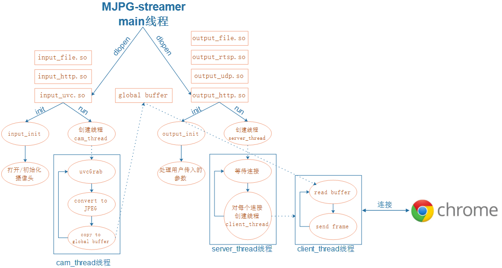
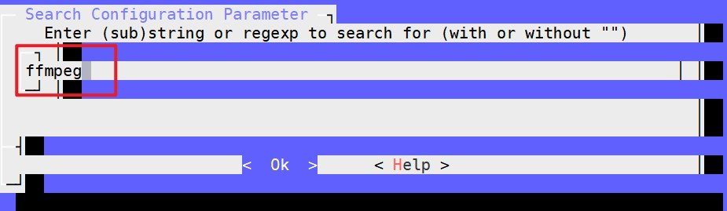
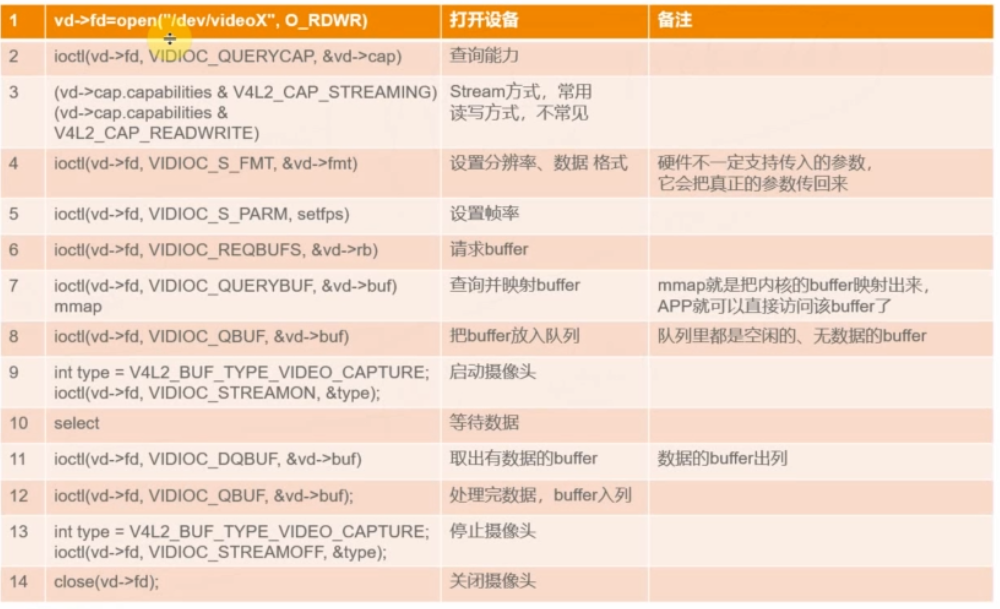

视频监控
学习韦东山老师的视频监控项目笔记。
1. 需求
- 家居
- 家庭安防
- 照看老人小孩
- 照看宠物
- 公司
- 仓库防火防盗
- 疫情监控（红外测温，人脸识别）
- 农业
- 大鹏记录
- 研究记录
- 娱乐
- 运动拍摄
- 风景拍摄
- 社会
- 交通监控
- 安保
2. 视频监控方案
实验测试使用的硬件：
硬件：arm板子imx6ull
摄像头：V4L2 USB免驱
2.1 MJPG-Streamer
2.1.1 介绍
局域网方案，需要实现两个程序。
程序1，需要实现数据的获取，然后等待其它网络连接，如果有设备连接上网络，则把摄像头数据发送过去。
程序2，连接网络获取数据，然后显示获取的数据。
优点
程序简单，所有源码一目了然，便于学习。
对于ARM板子性能要求不高，主频200MHZ的ARM芯片也能实现。
缺点
只能实现局域网内的视频监控，要实现互联网视频监控，需要另外实现内网穿透
mjpg-streamer没有实现声音传输
mjpg-streamer项目已经不在维护，仅建议用于学习
2.1.2 JPEG和MJPG格式简介
JPEG
- 简称JPG
- 一个象素的颜色可以用RGB三原色来表示，起始还可以用YUV格式来表示
- 使用RGB、YUV格式编码的照片，文件都很大，比如常见的BMP文件就是用RGB编码
- 把一个BMP文件转化未JPEG文件，可以发现图片质量没有发生变化，但是文件变小了许多
- JPEG式根据人体视觉的特点采用YCbCr格式，大大压缩了照片的大小
MJPG
Motion JPEG,简称MJPG
JPEG是静态图片的编码方式，MJPG是动态的视频编码格式
可以简单理解：MJPG就是把多个JPEG图片连续显示出来
MJPG优点：
- 很多摄像头本省就支持JPEG、MJPG，所以处理器不需要做太多处理
- 一般的低性能处理器就可以传输MJPG视频流
MJPG缺点：
- MJPG只是多个JPEG图片的组合，它不考虑前后两帧数据的变化，总是传输一帧帧图像：传输带宽要求高
- H264等视频格式，会考虑前后两帧数据的变化，只传输变化的数据：传输宽带要求低
2.1.3 MJPG-Streamer具体实现方式
在buildroot根目录下：
make menuconfig出现图像化页面之后，使用“/”搜索MJPG
可以知道添加路径
Target packages
-->> Networking application
-->> mjpg-streamer
选择之后，保存退出，在Buildroot根目录位置执行
make这是会在Buildroot的 dl/mjpg-streamer 目录下自动下载源码，并编译
结果保存在 output/images 目录下，这里测试使用网络文件系统挂载，找到rootfs.tar，然后解压到网络文件系统挂载的位置即可。
重启开发板系统，并接上摄像头，在开发板上查询设备：
#ls /dev/video*
/dev/video0 /dev/video1
我这里接上后摄像头之后新增的设备是： /dev/video1
查看开发板IP地址：
#ifconfig
eth0 Link encap:Ethernet HWaddr 00:04:9F:04:D2:35
inet addr:192.168.50.149 Bcast:192.168.50.255 Mask:255.255.255.0
inet6 addr: fe80::204:9fff:fe04:d235/64 Scope:Link
UP BROADCAST RUNNING MULTICAST MTU:1500 Metric:1
RX packets:6884 errors:0 dropped:0 overruns:0 frame:0
TX packets:3374 errors:0 dropped:0 overruns:0 carrier:0
collisions:0 txqueuelen:1000
RX bytes:7243467 (6.9 MiB) TX bytes:538184 (525.5 KiB)
lo Link encap:Local Loopback
inet addr:127.0.0.1 Mask:255.0.0.0
inet6 addr: ::1/128 Scope:Host
UP LOOPBACK RUNNING MTU:65536 Metric:1
RX packets:1 errors:0 dropped:0 overruns:0 frame:0
TX packets:1 errors:0 dropped:0 overruns:0 carrier:0
collisions:0 txqueuelen:0
RX bytes:148 (148.0 B) TX bytes:148 (148.0 B)
查询到的IP地址是：192.168.50.149
在开发板上安装好MJPG之后，执行命令：
mjpg_streamer -i "/usr/lib/mjpg-streamer/input_uvc.so -d /dev/video1 -f 30 -q 90 -n" -o "/usr/lib/mjpg-streamer/output_http.so -w /usr/share/mjpg-streamer/www"如果报错，则说明设备不对，在换用 video0
在本地游览器输入开发板地址查看摄像头数据：
192.168.50.149:8080
至此，实验成功。
2.1.4 框架分析

查看帮助：
mjpg_streamer -o “/usr/lib/mjpg-streamer/output_file.so --help”
mjpg_streamer -i "/usr/lib/mjpg-streamer/input_file.so --help"
把摄像头数据存储为JPG文件：
mjpg_streamer -i "/usr/lib/mjpg-streamer/input_uvc.so -d /dev/video1 -f 30 -q 90 -n" -o "/usr/lib/mjpg-streamer/output_file.so -f /tmp"把JPG文件输出到游览器：
mjpg_streamer -i "/usr/lib/mjpg-streamer/input_file.so -e -f /tmp" -o "/usr/lib/mjpg-streamer/output_http.so -w /usr/share/mjpg-streamer/www"
2.2 FFmpeg
2.2.1 介绍
- FFmpeg是什么？
- 一套开源软件
- 可以记录、转换音视频：可以从摄像头中记录视频，从声卡中记录音频，可以转化为各种格式保存起来
- 可以把各种格式的音视频转化为流：供在线观看
- 其它功能：视频截图、加水印、裁剪等
- Mplayer，ffplay，射手播放器，暴风影音，KMPlayer，QQ影音等视频频播放器的内核就是 FFmpeg
- 格式工厂的内核也是FFmpeg
- 简易理解
误区：我们以为mp4格式就代表了音频、视频的压缩格式，其实不是
- mp4只是一种封装格式
- MP4里面有音频数据、视频数据
- 音频数据有自己的压缩格式，还不止一种
- 视频格式有自己的压缩格式，还不止一种
从摄像头得到的原始数据太大，不易传输，需要压缩
- 压缩的方法有很多种：格式不同，编码器不同，这里对应视频编码器
从声卡得到的原始数据太大，不易传输，需要压缩
- 压缩的方法有很多种：格式不同，编码器不同，这里对应音频编码器
把这些文件压缩之后，及编码后的音频数据和视频数据合并到一起：复用MUX，就得到了MP4等文件
- ffmpeg的组成
ffmpeg的重要概念

ffmpeg处理音视频的过程
ffmpeg常用参数
参考文章
https://blog.csdn.net/leixiaohua1020/article/details/18893769
https://www.jianshu.com/p/3c8c4a892f3c
https://zhuanlan.zhihu.com/p/67878761
2.2.2 流媒体协议
上述方案的实现，会涉及到数据的传输协议，常用的流媒体传输协议如下：
| 流媒体协议 | HTTPFLV | RTMP | HLS | DASH |
|---|---|---|---|---|
| 传输方式 | http | tcp | http | http |
| 封装格式 | flv | flv tag | TS 文件 | Mp4 3gp webm |
| 延时 | 低 | 低 | 高 | 高 |
| 数据分段 | 连续流 | 连续流 | 切片文件 | 切片文件 |
| HTML5 | 使用flv.js | 不支持 | 使用hls.js | 可播放mp4,webm |
注意：
RTMP 可以用在双端
HTTPFLV、HLS只能用在拉流端参考文章：
https://www.notion.so/2b85beec8d084a1d9fc0e447dd44397a#0e928ca3004c4d00bcfa0694626999c1
https://www.jianshu.com/p/32417d8ee5b6
2.2.3 ffmpeg具体实现方式

需要实现三个程序：
程序1：获取摄像头数据，以及实现一个推送程序：一边读取摄像头数据，一边把数据推送给服务器。
程序2：接收ARM板子发来的数据，并把数据格式转换后发送给手机客户端。
程序3：从服务器上拉取数据，并显示出来。
上面程序实现采用开源程序：
- 程序1：ffmpeg
- 程序2：nginx
- 程序3：VLC游览器或者web游览器
本次实验将简化操作，将Nginx安装到开发板上。
在buildroot的根目录下，执行：
make menuconfig使用“/”搜索ffmpeg

根据查询结果，可以知道添加路径：
Target packages
-->> Audio and video applications
-->> ffmpeg
建议全选，保存退出，在Buildroot根目录位置执行
make这是会在Buildroot的 dl/ffmpeg 目录下自动下载源码，并编译。
结果保存在 output/images 目录下，这里测试使用网络文件系统挂载，找到 rootfs.tar，然后解压到网络文件系统挂载的位置即可。
重启开发板系统，确认接上后摄像头之后的设备和开发板IP地址。比如，我这里的摄像头设备是 /dev/video1 ，开发板IP是：192.168.50.149
开发板安装好ffmpeg后，执行命令：
ffmpeg -f v4l2 -framerate 10 -i /dev/video0 -q 10 my.mp4这时，会把摄像头的数据录制为my.mp4
通过播放器可以打开。
2.3 流媒体服务器
三种WEB服务器的比较：

Nginx具体实现方式
在Buildroot根目录下
$mkdir dl/nginx
$cd dl/nginx
$git clone https://github.com/winshining/nginx-http-flv-module.git回到Buildroot根目录下：
make menuconfig使用“/”搜索nginx
根据查询结果，可以知道添加路径：
Target packages
-->> Networking application
-->> nginx
nginx的配置建议全选，然后增加刚才下载文件的路径
保存退出，在Buildroot根目录位置执行
make这是会在Buildroot的 dl/nginx 目录下自动下载源码，并编译。
结果保存在 output/images 目录下，这里测试使用网络文件系统挂载，找到 rootfs.tar，然后解压到网络文件系统挂载的位置即可。
重启开发板系统，由于Nginx原本不支持RTMP和HTTPFLV，需要修改Nginx配置文件：/etc/nginx/nginx.conf
添加完数据之后重启开发板：
$/etc/init.d/S50nginx restart查询开发板IP：192.168.50.149
在内部游览器中输入：192.168.50.149
看到Nginx的欢迎界面，说明配置Nginx成功。
我们希望实现的功能是在网页上直接显示推送的视频，所以需要修改Nginx默认网页显示的内容。
找到nginx默认网页显示内容的位置：
/usr/html/index.html接下来替换原来网页默认显示的内容：
<!DOCTYPE html>
<html>
<head>
<meta content="text/html; charset=utf-8" http-equiv="Content-Type">
<title>flv.js demo</title>
<style>
.mainContainer {
display: block;
width: 1024px;
margin-left: auto;
margin-right: auto;
}
.urlInput {
display: block;
width: 100%;
margin-left: auto;
margin-right: auto;
margin-top: 8px;
margin-bottom: 8px;
}
.centeredVideo {
display: block;
width: 100%;
height: 576px;
margin-left: auto;
margin-right: auto;
margin-bottom: auto;
}
.controls {
display: block;
width: 100%;
text-align: left;
margin-left: auto;
margin-right: auto;
margin-top: 8px;
margin-bottom: 10px;
}
.logcatBox {
border-color: #CCCCCC;
font-size: 11px;
font-family: Menlo, Consolas, monospace;
display: block;
width: 100%;
text-align: left;
margin-left: auto;
margin-right: auto;
}
</style>
</head>
<body>
<div class="mainContainer">
<video name="videoElement" class="centeredVideo" id="videoElement" controls width="1024" height="576" autoplay>
Your browser is too old which doesn't support HTML5 video.
</video>
</div>
<script src="https://cdn.bootcss.com/flv.js/1.5.0/flv.js"></script>
<script>
if (flvjs.isSupported()) {
startVideo()
}
function startVideo(){
var videoElement = document.getElementById('videoElement');
var flvPlayer = flvjs.createPlayer({
type: 'flv',
isLive: true,
hasAudio: true,
hasVideo: true,
enableStashBuffer: true,
url: 'http://192.168.50.125/test?app=live&stream=wei'
});
flvPlayer.attachMediaElement(videoElement);
flvPlayer.load();
flvPlayer.play();
}
videoElement.addEventListener('click', function(){
alert( '是否支持点播视频：' + flvjs.getFeatureList().mseFlvPlayback + ' 是否支持httpflv直播流：' + flvjs.getFeatureList().mseLiveFlvPlayback )
})
function destoryVideo(){
flvPlayer.pause();
flvPlayer.unload();
flvPlayer.detachMediaElement();
flvPlayer.destroy();
flvPlayer = null;
}
function reloadVideo(){
destoryVideo()
startVideo()
}
</script>
</body>
</html>上述内容需要注意的修改点如下：
推送本地视频：
ffmpeg -re -i /4_project/lizhi.mp4 -vcodec copy -acodec copy -f flv rtmp://127.0.0.1/live/wei然后打开本地游览器
就可以看到推送的视频
同时也可以使用VLC播放器拉流，首先安装VLC播放器，下载地址：https://www.videolan.org/
使用RTMP协议拉流，在VLC播放器中点击“媒体”—>”打开网络串流”，输入：
rtmp://192.168.50.149/live/wei使用HTTPFLV协议拉流，在VLC播放器中点击“媒体”—>”打开网络串流”，输入：
http://192.168.50.149/test?app=live&stream=wei上述推流采用推送本地视频的方式，也可以直接推送摄像头数据：
ffmpeg -f v4l2 -framerate 10 -i /dev/video1 -q 10 -f flv rtmp://127.0.0.1/live/wei经过测试，发现推送摄像头数据时，拉流端视频很卡顿，这是由于IMX6ULL开发板性能太弱，所以测试时采用推送本地视频的方式。
参考文章：
https://blog.csdn.net/impingo/article/details/103077380
https://www.cnblogs.com/saysmy/p/7851911.html
3. 硬件接口
参考文件：MJPG-Streamer的源码位置： plugins/input_uvc/v4l2uvc.c
3.1 摄像头
硬件接口：
- USB
- CMOS等
- 都遵守相同的标准：V4L2
- APP可以使用同样的API访问不同硬件接口的摄像头
摄像头参数：
- 分辨率
- 数据格式
- RGB YUV MJPG JPJE 等
- 帧率
摄像头API接口：

3.2 声卡
ffmpeg借助第三方库操作声卡
在Buildroot的根目录下，输入
make menuconfig使能alsa-lib
Target packages -> Libraries -> Audoi/Sound -> -*-alsa-lib -->配置全部选中使能alsa-utils
Target packages -> Audio and video applications -> alsa-utils ->>全部选中
编译生成映像文件
make运行Ffmpeg
查看声卡设备：
$ls /dev/snd
controlC0 pcmC0D0c pcmC0D0p pcmC0D1c pcmC0D1p timercontrolC0：用于声卡控制，C0表示声卡0
pcmC0D0c：用于录音的pcm设备，其中“C0D0”表示声卡0中的设备0，最后的c是capture的缩写，表示录音
pcmC0D0p：用于播放的pcm设备，其中“C0D0”表示声卡0中的设备0，最后的p是playback的缩写，表示放音
pcmC0D1c：用于录音的pcm设备，其中“C0D1”表示声卡0中的设备1，最后的c是capture的缩写，表示录音
pcmC0D1p：用于播放的pcm设备，其中“C0D1”表示声卡0中的设备1，最后的p是playback的缩写，表示放音
timer：定时器
只录制声音：
ffmpeg -f alsa -ac 1 -i hw:0,0 my.wav播放：
aplay my.wav测试流媒体：
//推流，在开发板上执行，只推声音
ffmpeg -f alsa -ac 1 -ar 11025 -i hw:0,0 -acodec aac -f flv rtmp://127.0.0.1/live/wei
//视频声音一起推送
ffmpeg -f alsa -ac 1 -ar 11025 -i hw:0,0 -acodec aac -f v4l2 -framerate 10 -i /dev/video1 -q 10 -f flv rtmp://127.0.0.1/live/wei
//拉流
//使用rtmp协议拉流,在VLC播放器中
rtmp://192.168.50.149/live/wei
//使用HTTPFLV协议拉流
http://192.168.50.149/test?app=live&stream=wei
4. 内网穿透
内网穿透有两种情况：
- 家里宽带有公网IP
- 家里宽带无公网IP
如何判断自己是否具有公网IP呢？
通过对比你的路由器 显示的外网IP 与 www.ip138.com 显示的IP, 如果是一致的，则一般就是公网IP
如我的路由器WAN口显示的外网IP为：10.0.37.240
网页www.ip138.com 查询到的IP是：113.88.168.57
这就表明我的网络没有公网IP。
4.1 家里宽带有公网IP
一般家里的网络拓扑图如下：
内网设备访问互联网，先经过路由器的公网IP，路由器在获取光猫的公网IP，通过光猫的公网IP访问外面的互联网。因此，内网设备可以主动访问外面的互联网；但是反过来就不行。也就是外网设备无法主动访问内网设备，因为他们没有公网IP,无法被主动找到。
上面的拓扑图中，路由器直接获取公网IP访问互联网，我们可以通过路由器设置端口，实现 公网IP+端口号的形式访问家里的设备 。这是最廉价的方案，机会没有成本。但随着IPv4资源减少，IPv6普及以前，外网IP肯定越来越少，所以我们访问内网设备需要做内网穿透。
4.2 家里宽带无公网IP
网络拓扑图如下：
上面拓扑图中，由于路由器获取的是电信内网IP，不是公网IP，无法直接访问互联网。下面主要介绍内网穿透的两种方案：
- frp内网穿透
- 花生壳软件
他们的原理类似,需要有一台公网IP的服务器，通过服务器做数据转发。
4.2.1 frp内网穿透
所需要的条件：一台VPS
frp项目在GitHub地址：https://github.com/fatedier/frp
下载地址：https://github.com/fatedier/frp/releases